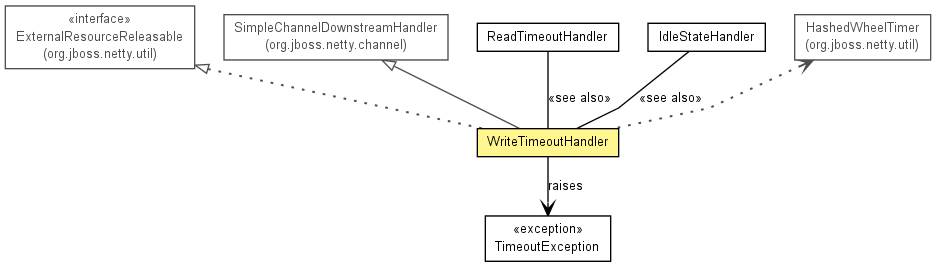

org.jboss.netty.handler.timeout
Class WriteTimeoutHandler
java.lang.Object
 org.jboss.netty.channel.SimpleChannelDownstreamHandler
org.jboss.netty.handler.timeout.WriteTimeoutHandler
org.jboss.netty.channel.SimpleChannelDownstreamHandler
org.jboss.netty.handler.timeout.WriteTimeoutHandler
- All Implemented Interfaces:
- ChannelDownstreamHandler, ChannelHandler, ExternalResourceReleasable
@ChannelHandler.Sharable
public class WriteTimeoutHandler
- extends SimpleChannelDownstreamHandler
- implements ExternalResourceReleasable

Raises a WriteTimeoutException when no data was written within a
certain period of time.
public class MyPipelineFactory implements ChannelPipelineFactory {
private final Timer timer;
public MyPipelineFactory(Timer timer) {
this.timer = timer;
}
public ChannelPipeline getPipeline() {
// An example configuration that implements 30-second write timeout:
return Channels.pipeline(
new WriteTimeoutHandler(timer, 30), // timer must be shared.
new MyHandler());
}
}
ServerBootstrap bootstrap = ...;
Timer timer = new HashedWheelTimer();
...
bootstrap.setPipelineFactory(new MyPipelineFactory(timer));
The Timer which was specified when the ReadTimeoutHandler is
created should be stopped manually by calling releaseExternalResources()
or Timer.stop() when your application shuts down.
- Version:
- $Rev: 2222 $, $Date: 2010-03-24 14:07:27 +0900 (Wed, 24 Mar 2010) $
- Author:
- The Netty Project, Trustin Lee
- See Also:
ReadTimeoutHandler,
IdleStateHandler
| Methods inherited from class java.lang.Object |
clone, equals, finalize, getClass, hashCode, notify, notifyAll, toString, wait, wait, wait |
WriteTimeoutHandler
public WriteTimeoutHandler(Timer timer,
int timeoutSeconds)
- Creates a new instance.
- Parameters:
timer - the Timer that is used to trigger the scheduled event.
The recommended Timer implementation is HashedWheelTimer.timeoutSeconds - write timeout in seconds
WriteTimeoutHandler
public WriteTimeoutHandler(Timer timer,
long timeout,
TimeUnit unit)
- Creates a new instance.
- Parameters:
timer - the Timer that is used to trigger the scheduled event.
The recommended Timer implementation is HashedWheelTimer.timeout - write timeoutunit - the TimeUnit of timeout
releaseExternalResources
public void releaseExternalResources()
- Stops the
Timer which was specified in the constructor of this
handler. You should not call this method if the Timer is in use
by other objects.
- Specified by:
releaseExternalResources in interface ExternalResourceReleasable
getTimeoutMillis
protected long getTimeoutMillis(MessageEvent e)
writeRequested
public void writeRequested(ChannelHandlerContext ctx,
MessageEvent e)
throws Exception
- Description copied from class:
SimpleChannelDownstreamHandler
- Invoked when
Channel.write(Object) is called.
- Overrides:
writeRequested in class SimpleChannelDownstreamHandler
- Throws:
Exception
writeTimedOut
protected void writeTimedOut(ChannelHandlerContext ctx)
throws Exception
- Throws:
Exception
Copyright © 2008-2011 JBoss, a division of Red Hat, Inc.. All Rights Reserved.